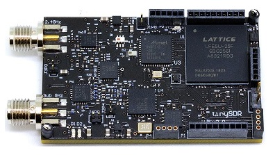
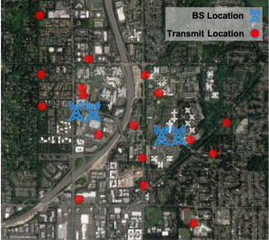
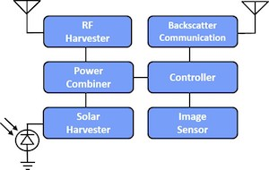
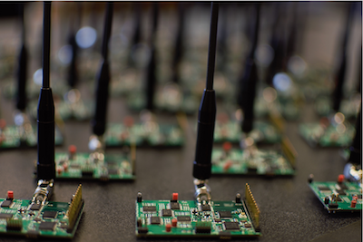
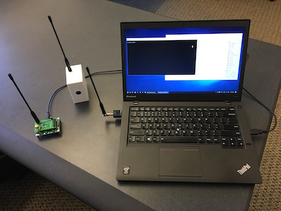
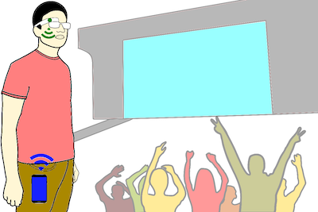
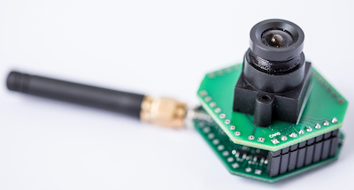
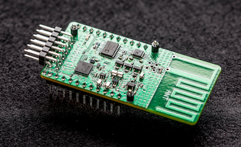
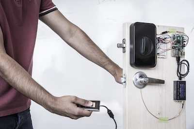

Mehrdad Hessar
I work on low-power wireless networks and embedded devices for Internet of Things applications. I have experience in low-power backscatter communication, signal processing, machine learning and hardware integration. Currently, I am a Ph.D. candidate working with Shyam Gollakota in the Networks and Mobile Systems Lab. I earned my M.Sc. in Electrical Engineering from ECE Department at University of Washington. Before coming to UW, I received my B.Sc in Computer Engineering from Amirkabir University of Technology.
Highlights
- Deploying deep learning on Azure Sphere using Apache TVM
- Internship at Google, Summer 2020
- Internship at OctoML, Spring 2020
- TinySDR, first ultra-low-power SDR platform for IoT testbeds
- Internship at Microsoft Research Lab working on IoN project, Summer 2018
- LoRa Backscatter wins distinguished paper award in Ubicomp 2017
- Techcrunch covered battery-free HD video streaming
- Awarded Madrona prize on 'The Next Big Leap in Backscatter Communication' from Madrona Venture Group
- Economist, IEEE Spectrum, and Tech Review covered LoRa Backscatter
- Wall Street Journal, Atlantic, and IEEE Spectrum covered sending password over the body
|

|
TinySDR: Low-Power SDR Platform for Over-the-Air Programmable IoT Testbeds
Mehrdad Hessar, Ali Najafi, Vikram Iyer, Shyamnath Gollakota NSDI - February 2020 [Paper][Slides] MobiCom - October 2019 [Demo] |
|

|
Blind Distributed MU-MIMO for IoT Networking over VHF Narrowband Spectrum
Chuhan Gao, Mehrdad Hessar, Krishna Chintalapudi, Bodhi Priyantha MobiCom - October 2019 [Paper] |
|

|
Battery-Free Wireless Video Streaming Camera System
Ali Saffari, Mehrdad Hessar, Saman Naderiparizi, Joshua R. Smith IEEE RFID - April 2019 [Paper] |
|

|
NetScatter: Enabling Large-Scale Backscatter Networks
Mehrdad Hessar, Ali Najafi, Shyamnath Gollakota NSDI - February 2019 [Paper][Slides] |
|

|
Demo: Wireless Video Streaming for Ultra-Low-Power Cameras
Mehrdad Hessar, Saman Naderiparizi, Ye Wang, Ali Saffari, Shyamnath Gollakota, Joshua R. Smith Mobisys - June 2018 [Paper][Video] |
|

|
Towards Battery-Free HD Video Streaming
Saman Naderiparizi, Mehrdad Hessar, Vamsi Talla, Shyamnath Gollakota, Joshua R. Smith NSDI - April 2018 [Paper][Slides][Video][Webpage] Press: Techcrunch |
|

|
Ultra-low-power Wireless Streaming Cameras
Saman Naderiparizi, Mehrdad Hessar, Vamsi Talla, Shyamnath Gollakota, Joshua R. Smith arXiv - July 2017 [Paper] |
|

|
LoRa Backscatter: Enabling The Vision of Ubiquitous Connectivity
Mehrdad Hessar, Vamsi Talla, Bryce Kellogg, Ali Najafi, Joshua R. Smith, Shyamnath Gollakota IMWUT - September 2017 [Paper][Slides][Video][Webpage] Press: Economist, IEEE Spectrum, Tech Review Distinguished Paper Award |
|

|
Enabling On-Body Transmissions with Commodity Devices
Mehrdad Hessar, Vikram Iyer, Shyamnath Gollakota Ubicomp - September 2016 [Paper][Slides][Webpage] MobiCom - October 2016 [Poster] Press: Wall Street Journal, Atlantic, IEEE Spectrum |